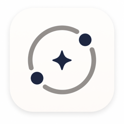

Bipolar Tracker CBT DBT
A self-monitoring app for mood, sleep, daily routines, journaling, CBT/DBT-inspired modules and bipolar-related early-warning patterns.
Important Safety Note
Bipolar Tracker CBT DBT is not a medical device and does not diagnose, treat, prevent or cure bipolar disorder or any other condition. If you may harm yourself, may harm someone else, feel unable to stay safe, or need urgent care, contact local emergency services, a crisis line or a trusted person immediately.
Bipolar Tracker CBT DBT не является медицинским устройством, не ставит диагноз и не заменяет врача, психиатра, психотерапевта или экстренную помощь. Если есть риск навредить себе или другим, потерять контроль или оставаться одному небезопасно, обратитесь в местные экстренные службы, кризисную линию или к доверенному человеку.